肥胖与减肥干预状态下的肠道微生物组及血清代谢物变化
原文：https://mp.weixin.qq.com/s?__biz=MzAwMzIzOTk5OQ==&mid=2247497622&idx=2&sn=610c580b0acb0984a1433f527b605330&chksm=9b3c8ec6ac4b07d06afe277bd252ba2260261a6eecb75879124ce7521510632566ccc012ccad#rd 合集：文献速递
写在前面
首先，既然我要安利这篇文章，那么我必然要给出我的理由： ●1、这是一篇高分 文章（Nature medicine，IF = 29.886，不必多说） ●2、工作量高：这是一篇典型的分析高通量数据的文章，本文中的Sample数为257 ，仅微生物组这一模块便产生了1403.5GB 的数据。●3、篇幅小：虽然工作量与数据量巨大，但丝毫不影响作者提取干货 撰文，拒绝长篇大论！ ●3、思路清晰、设计合理：既有生信 分析、又有实验 证明，既有临床 病人的样本又补了动物 实验，既有大数据的排查、又有焦点对象的局部关注，是一篇内容饱满、十分“周全”的文章。 ●4、成本投入大：能用宏基因组测序的决不用16SrDNA扩增子测序（一个三位数、一个四位数）●5、颜值高：此文的插图做的直观、美观 ，令人舒适（R语言以及各种网络图利用十分娴熟）。 ●6、成果有价值：与其他做组学的文章不同，此文并没有平铺成堆的冗(la)余(ji)数据混篇幅，而真正的筛选出了能够改变代谢、帮助宿主减重的微生物。
Abstract
肠道微生物与人体健康的关系我在之前的一篇文献分享中介绍过，这里不赘述。此文的主要工作便是分析了肥胖组、瘦组、减重干预组的肠道微生物 组与代谢组 ，并找出两组数据的关系。在海量的数据中发现了 Bacteroides. thetaiotaomicron 能够抑制肥胖导致的体重增加与肥胖程度（其中还伴随着血清中谷氨酸盐的减少），并进一步在通过手术减重的对象中观察到与肥胖相关的微生物丰度被逆转——尤其是 B.thetaiotaomicron 的升高与谷氨酸盐浓度的降低（说白了这篇文章的主要目光便是集中于肠道微生物 与氨基酸代谢 ）。
Introduction
对于肥胖者来说，微生物组方面最显著的变化便是丰度会下降，此外还有 Bacteroidetes 与 Firmicutes比值下降 的说法 ， 并且这一变化在饮食干预或胃旁路手术后能够被逆转 。为了找到肥胖者与瘦者之间微生物群的差异与一般共性，该课题组以汉族人为受试对象进行了肠道微生物组的鸟枪测序 ，从宏基因组的角度对微生物组做出更具深度、更详细的描述。
Results
● （一）宏基因组分析发现肥胖关联基因与分类群的变化：该课题组首先对一组中的72个肥胖者、79个瘦者的粪便样本进行宏基因组分析，发现肥胖个体的基因数量与微生物丰度明显较低（即微生物的活性与数量都不太行），这一结果与此前对欧洲人的报道相吻合，通过对比我们可以发现这种微生物的变化与人种（法国与丹麦人也是如此）与年龄无关（确实是由肥胖状态引起的），结果图如下。
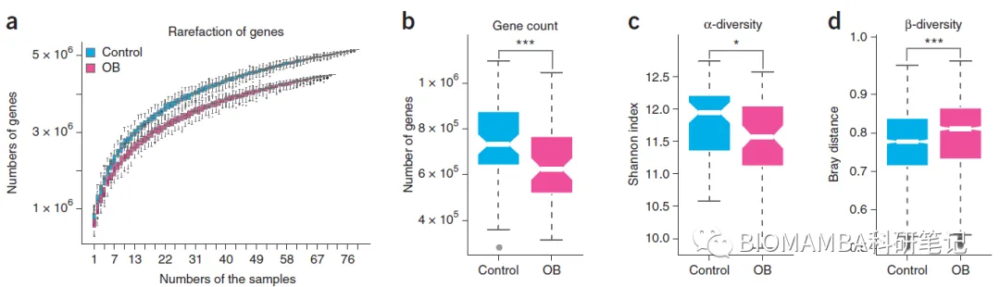
在上面的d图中我们可以发现，肥胖组的 β -多样性反而是增加的，体现了改组数据的异质性较高（与丰度高是两个概念）。 通过对宏基因组关联基因的分析，该课题组筛选得到了350,524个与肥胖相关联的基因（P<0.01，Wilcoxon rank-sum test）。并发现健康组的标记基因出现率更低，结果如下图所示。
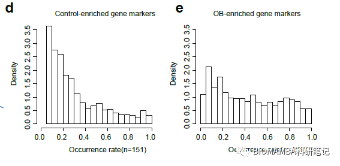
紧接着，对于关联基因的分析还不够，作者还将350524个基因分为宏基因组连锁群（metagenomic linkage groups, MLG）进行分析（大家可以理解为每个MLG为一个微生物的数据），发现217个包含超过100个基因的肥胖相关MLG，结果如下图所示。
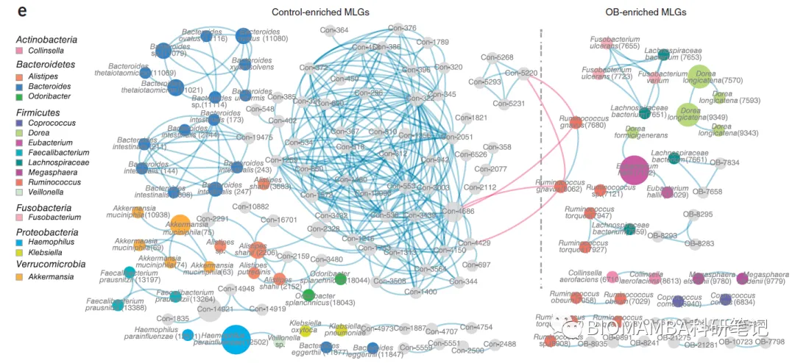
显然上图做的有些浮夸，我们来解读一下，在这些数据中，包含了一条很重要的讯息： Akkermansia muciniphila 与 __Fecalibacterium prausnitzii （这两种微生物之前有过可以抑制脂质生成、抑制炎症的相关报道）在瘦者组的丰度大大增加。下图给出了作者进行MLG差异分析后注释得到的组别富集菌株，其中 R. torques 与 R. gnavus 曾被报道与肠道的炎症和代谢疾病相关； D. longicatena ,F. prausnitzii , B. intestinalis 和 B. thetaiotaomicrion 是两组差异MLG的TOP10选手。此外，数据也确实反应了 Bacteroidetes /Firmicutes 在肥胖选手中存在下降现象，遗憾的是显著性不太行(P = 0.062，Wilcoxon rank-sum test），总之该文有确凿的证据表明，两组之间的微生物存在某种特定差异。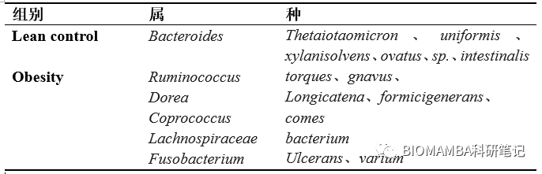
● （二）微生物种类与临床指标之间的联系
作者为了探寻两组数据之间的关联，做了一个方差排列分析（permutational analysis of variance，PERMANOVA），将葡萄萄糖化血红蛋白、BMI、胰岛素抵抗稳态模型评估(HOMA-IR)、血清脂质浓度、炎症因子、脂肪因子的水平与微生物的丰度之间做了相关性分析（Random forests regression,P < 0.05)，结果如下图所示：
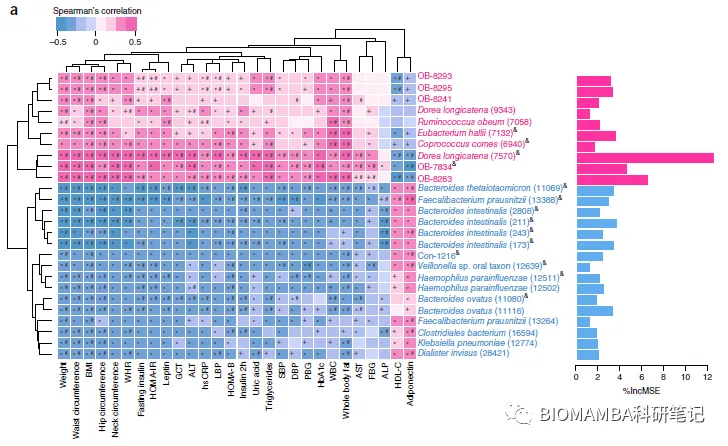
通过相关性分析发现，共有26个MLG与BMI展现出相关性，其中 B. thetaiotaomicron ,B. intestinalis ,B. ovatus 与BMI的相关性最高，这些菌种在肥胖组与瘦组的丰度都很高，并且与体脂、胰岛素抵抗、炎症状态均有相关性（random forests regression and Spearman’s correlation，Spearman’s correlation value <–0.3 or >0.3, adjusted P < 0.05）。此外，作者聚焦于瘦素与脂联素之间的相关性分析，结果如下图所示（红色:correlation coefficient >0.3, 蓝色：correlation coefficient<−0.3） 。其中 F. prausnitzii and B. thetaiotaomicron 与瘦素浓度呈负相关、与脂联素浓度呈正相关关系； D. longicatena 则相反，其与瘦素浓度呈正相关、与脂联素浓度呈负相关关系（判别标准同上）。这种特定的关系也为进一步发掘微生物生物标记带来可能。
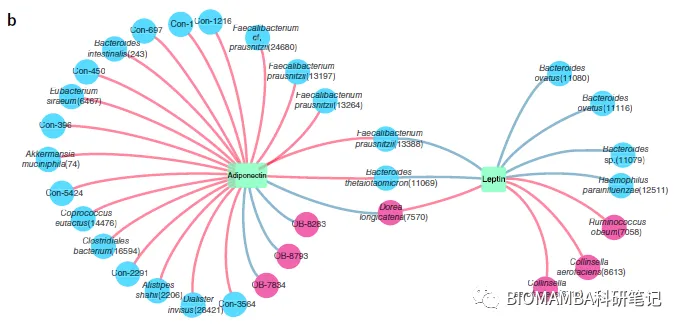
● （三）肥胖微生物组的功能特点
作者鉴定了至少六个样本（这里并没有说明为什么挑选了这六个sanple）中的5,705的KEGG与KOs，其中584个KOs在胖瘦组之间具有差异，结果入下图所示：
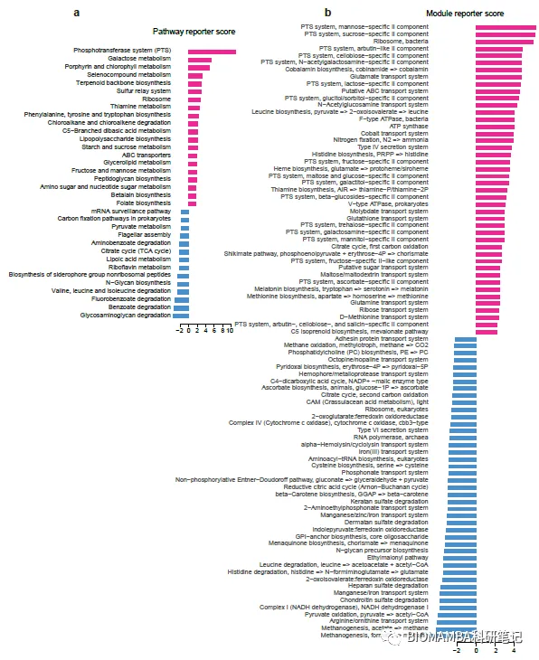
● 1、糖类代谢通路
在肥胖组中，关于磷酸转移酶 （与碳水化合物代谢有关）的KEGG通路富集成都更高。而磷酸转移酶系统与 Firmicutes 门的微生物呈正相关关系（在上文我们也提到过该门的微生物在肥胖组中存在丰度上升现象）。更值得关注的是，肥胖组中关于糖类（如果糖、甘露糖、半乳糖、淀粉、蔗糖、粘多糖）代谢相关基因的丰度也显著增加，其中的联系不言而喻—— Firmicutes 门微生物通过磷酸转移酶系统从而增强了机体对碳水化合物的利用从而在肥胖的发生过程中起到协同作用。相反地，与三羧酸循环相关的基因丰度在肥胖组中减少。这一结果与此前与此前在欧洲人、非洲人及饮食诱导的肥胖小鼠研究相一致。
● 2、炎症相关通路
作者发现与LPS 和肽聚糖 生物合成相关的微生物群在肥胖个体体内丰度明显升高，而这两种抗原也的确引起了这些个体体内LBP、TNFα、IL6等促炎因子 的升高。
● 3、氨基酸代谢通路
苯丙氨酸、色氨酸、酪氨酸的生物合成通路，谷氨酰胺、谷氨酸转移系统均在肥胖组中显著上调。而缬氨酸、亮氨酸、异亮氨酸降解通路下调（这也与此前对小鼠做的人类肥胖症的FMT结果相吻合）。换句话说，肥胖者体内的芳香族氨基酸 （AAA)与支链氨基酸(BCAA)的合成活动很活跃；很不幸，这两类氨基酸均会提高体内的炎症水平。
● （四）肠道微生物与宿主循环系统中的代谢物之间关联
这一部分作者使用了非靶向代谢组学分析技术获得的结果与之前测得的几组数据一样，在代谢物这一模块，胖瘦组依然存在一些特定差异。作者从中筛选得到了148种差异代谢物 。在靶向代谢组学分析中，从中发现34种氨基酸中的20种在胖瘦组之间具有差异性。为了阐明代谢物水平变化与微生物之间的关系，这里同样进行了相关性分析，使用协惯量分析（co-inertia analysis）在217个MLG与148种代谢物之间寻找协变量，在典型对应分析（canonical correspondence analysis）中，酪氨酸、苯丙氨酸、谷氨酸被分离出来，亮氨酸、异亮氨酸、缬氨酸与其他BCAA在肥胖组中浓度更高，与我们之前提到过的肥胖者的芳香族与支链氨基酸合成的活跃相吻合。值得一提的是，BCAA的水平与宏基因组的丰度呈现负相关的关系，这也与我们上文对宏基因组的分析相吻合。另一方面，BCAA与 Bacteroides 属的微生物呈负相关的关系（如 B. thetaiotaomicron , B. intestinalis ,B. ovatus and B. uniformis ），我们可以认为BCAA与AAA含量在肥胖组升高的原因初步是因为 Bacteroides 的变化。而BCAA与AAA真的真的是一类很糟糕的指标，其与T2D、心血管疾病、胰岛素抵抗、高血糖、高血脂、炎症因子等诸多“更糟糕”的指标呈正相关关系。当然，这部分数据带来的也不都是坏消息，作者从中发现了一种与谷氨酸呈负相关关系的菌种——** B. thetaiotaomicron** ， 这一菌种可以合成谷氨酸脱羧酶 从而消耗谷氨酸。而血清谷氨酸浓度是与BMI、WHR、腰围、胰岛素抵抗状态、三脂酰甘油等指标呈正相关的关系；显然，作者不会放过这样有价值的发现，因此有了此文的下一part实验。
● （五） B. thetaiotaomicron 对宿主的肥胖及代谢影响
已有文献表明， B. thetaiotaomicron 是一种定殖于人体肠道的优势菌种，其丰度的减少常伴随着肥胖的发生与血清氨基酸水平的升高。作者对正常饲养的老鼠以灌胃的方式使用了活的 B. thetaiotaomicron 、加热杀死的 B. thetaiotaomicron 以及PBS，结果如下图所示，从中发现 B. thetaiotaomicron 可以降低腹股沟及总体脂肪质量 ，并增加去脂体重。
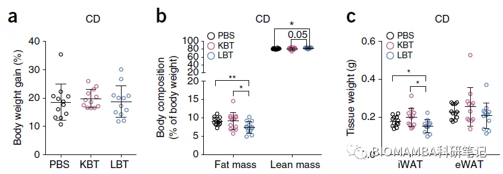
此外，对高脂饮食（HFD）的小鼠做相同处理，能够降低其体重增加量及肥胖程度，结果如下图所示。
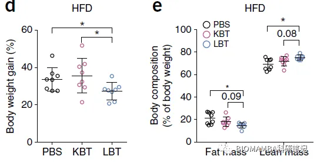
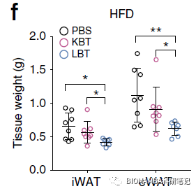
另一方面，服用了活的 B. thetaiotaomicron 后HFD小鼠血浆内脂联素水平更高且瘦素水平更低（如下图所示），并能够通过16s rDNA扩增子测序能够检测到该菌株的丰度上升。对HFD小鼠的白色脂肪组织进行组织学分析也显示，给以活的 B. thetaiotaomicron 试验组的脂肪细胞更小 。分析与脂肪分解及脂肪酸氧化的基因后发现， A drb3, Pnpla2 , Cpt2 , Acox1 and Ppargc1a 的表达量均上升；与脂质合成的基因如 Srebf1 , Scd1 和 Fasn 表达量下降，伴随这两类指标的还有24-h的卡路里消耗增加 ；而与炎症相关的 Cd68 , Ccl2 , Il6 and Il1b 基因表达量下降。此外，利好的消息还有氨基酸水平的降低 ，无论从哪个角度看 B. thetaiotaomicron 都是小鼠减肥的特效药。
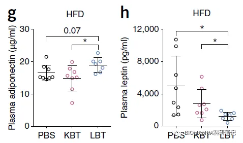
● （六）袖状胃切除术（SG）对肠道微生物组和代谢指标的影响
为了考察SG对肥胖者肠道微生物与代谢物水平的影响，作者将肥胖组作为0月，并测定了术后1月与3月的状态与瘦组相对比后发现接受过SG手术样本的微生物群更接近瘦组 ，并且具有时间的梯度，即3月的SG术后样本更接近于瘦组，不仅仅体现在物种组成上，宏基因组测得的基因数量与微生物群的 α -多样性也会随着时间的推移而增加。从KEGG的角度来说，34个与肥胖相关的KEGG通路之中，刚好有一半的通路在3个月之后下调，24个通路与Control组无显著性的差异。从更细致的方面来看，涉及到碳水化合物代谢、三羧酸循环、黏多糖降解、LPS合成、AAA与BCAA合成的基因表达量均接近瘦组水平（热图结果我就不放了）。
在MLG的变化之中，发现了 B. thetaiotaomicron 的丰度增加并伴随着BMI的减少（generalized estimating equation analysis，GEE）。值得关注的是，与此前的灌胃试验结果不同，3个月后的受试对象的BCAA含量并没有明显减少（这算是本文为数不多的遗憾），但AAA与谷氨酸(P < 0.05, GEE model）在循环系统中的浓度下降（这点与此前关于胃旁路手术的报道相一致），与此同时谷氨酸代谢相关的酶表达量上升。在这一过程中高血糖、胰岛素抵抗、瘦素浓度、炎症因子的水平均有所改善。也就是说，SG不仅在表面的体重上对患者有所帮助，在微生物、代谢物、生理病理指标上均有所改善 。
Disscussion
鉴于正文中已经描述的很详尽了，这一部分我就不用文中的discussion了。读到这里，我想大家应该能体会到我在文章开始说的安利点了，我们结合具体内容来重申一下：
本文一共对微生物组（16s rDNA，宏基因组测序两种方式）、代谢组、生理病理指标的测定产生的数据进行了分析；设计了生物信息学分析、控制变量测定 B. thetaiotaomicron 效果、评价SG手术带来的改善等模块——工作量大 。
即使是设计了这么多的模块，正文的内容其实就只有3张纸——篇幅小 。
文章运用了各种生信分析手段与统计方法以及R语言 和linux 的组合拳，先从宏基因组数据与肥胖关联出发，进而转向宏基因组与生理指标的联系，加以KEGG通路的分析详细的解释了微生物变化可能对宿主带来的影响，找到了相关的代谢物，并找到了确实具有治疗效果的微生物——思路清晰、设计合理、结果有价值 （作者忽悠的我都想买一瓶尝尝了）。
如此逻辑严谨、技术先进、工作量与成果都过关的文章，人力、精力与财力的投入必然也在线——成本投入大 。
谈谈个人想法
光读懂别人的文献也无非是拾人牙慧，当自己面对复杂数据时仍会一筹莫展（经典案例便是我本人），还是希望大家能够加强互相交流、互通有无 ，多学习一些新鲜的实验技术与数据分析方法，这也是本公众号诞生的初衷。
参考文献
这篇文章与其补充材料链接替大家下载好了：https://pan.baidu.com/s/1sklSQ_A28hbU78KUbyy4cA提取码：wh6u

如何联系我们
 公众号后台消息更新不及时，超过48h便不允许回复读者消息，这里给大家留一下领取资料、免费服务器的微信号 ，方便各位随时交流、提建议(科研任务繁重，回复不及时请见谅)。此外呼声一直很高的交流群 也建好了，欢迎大家入群讨论：永久免费的千人生信、科研交流群
公众号后台消息更新不及时，超过48h便不允许回复读者消息，这里给大家留一下领取资料、免费服务器的微信号 ，方便各位随时交流、提建议(科研任务繁重，回复不及时请见谅)。此外呼声一直很高的交流群 也建好了，欢迎大家入群讨论：永久免费的千人生信、科研交流群
大家可以阅读完这几篇之后添加给生信入门初学者的小贴士 如何搜索公众号过往发布内容

 您点的每个赞和在看，我都认真当成了喜欢
您点的每个赞和在看，我都认真当成了喜欢